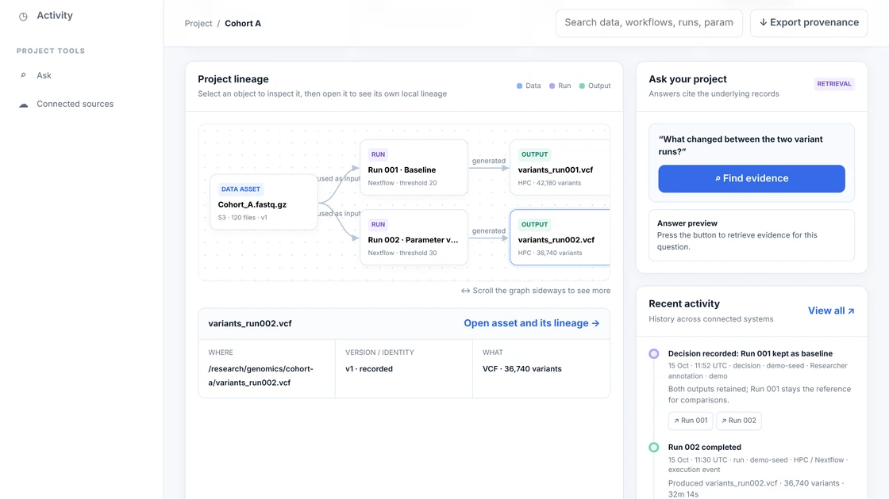

A record for scientific data Invite-only early access
More science, fewer data and admin headaches.
Every sample, variant, and analysis, connected.
Jubilab keeps the record of how a scientific result was made. Trace a result to the run, inputs and parameters behind it. Compare two runs. See what the record does not know.
Runs on your own machine. The server makes no outbound network calls. Demo data is synthetic.

Genetic discovery without the data chaos.
- Which samples went into this callset?
- Was it built on GRCh37 or GRCh38?
- Why did we drop those three samples?
One mislabelled sample can quietly cost a lot of work. When the analyst leaves, the answers leave too.
One record, kept beside the pipelines you already use.
Trace
TodayFollow any result back to the run and inputs behind it. Compare two runs. Each run is kept as history that cannot be edited, and the record says what it does not know.
Connect
BuildingLink every sample to its files, runs and results, straight from the cluster, without moving your data.
Catch
BuildingFlag sample swaps and reference-build mismatches before they reach a paper.
Jubilab sits beside your pipeline engine. It does not replace it, and it does not store your data.
See it on a demo project.
Real screens and a real command session, on synthetic data.
Trace a result
Start at any output and follow it back to the run that made it and the inputs that run used. Start at an input and see everything that depends on it.
See what changed
Line up two runs and see which parameters, versions or results differ. Jubilab records the difference. It does not decide which result is better.
Know how sure you are
A gap shows up as a gap. Each fact is marked verified, inferred, manual or unknown.
- verified
- inferred
- manual
- unknown
Text version of this diagram
- Backward from variants_run002.vcf. It was generated by Run 002, which used Cohort_A.fastq.gz (data asset, S3, 120 files, version v1) as input.
- Forward from Cohort_A.fastq.gz. Run 001 and Run 002 both used it. Run 001 generated variants_run001.vcf (42,180 variants) and Run 002 generated variants_run002.vcf (36,740 variants).
- What changed. Run 002 ran with quality_threshold = 30 where Run 001 ran with 20.
- What is unknown. The container digest of Run 002 was not captured.
From the command line
On a cluster node with no internet, a record is written to a file and sent to the server later. This is a real session on the demo project, trimmed to four commands.
$ python -m server serve --data-dir ./data jubilab: listening on http://127.0.0.1:18190 data-dir=./data $ jubilab register-run --id run-002 --name "Variant calling, threshold 30" --input fastq-v1 -p quality_threshold=30 --status completed --executor nextflow spooled register_run key=ed400327f323beb1c015acf5e7ed1297 -> jubilab-spool.p_8hakp36js1.jsonl $ jubilab sync synced 3 record(s) to http://127.0.0.1:18190/api/projects/p_8hakp36js1/ingest: applied=3 duplicate=0 error=0 $ jubilab status spool: jubilab-spool.p_8hakp36js1.jsonl (3 records, 0 unsynced) server: http://127.0.0.1:18190 {"projects":{"active":1,"archived":0,"unavailable":0},"status":"ok","version":"0.1.0"} project: p_8hakp36js1 (Cohort A)
Planned, not in the product today
Where this is going
Request early access
Our goal: become the record of how genetic discoveries are made.
Jubilab is invite-only. We are choosing labs to learn from real use, starting with genetics researchers. Every question is required except the last one, a short free-text answer. The answers help us choose well.